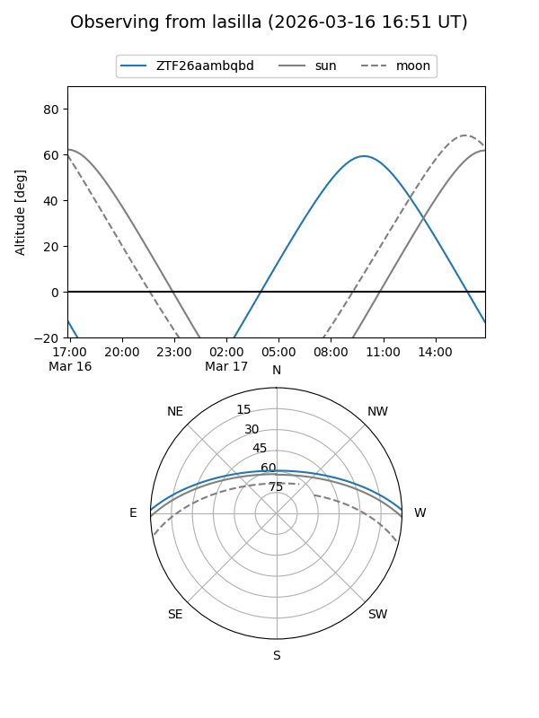
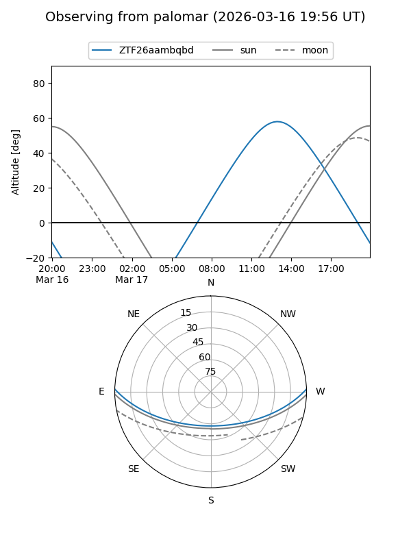

ZTF26aambqbd
Target ZTF26aambqbd at 2026-03-16 14:27
Aliases and brokers:
FINK: link
Lasair: link
ALeRCE: link
alt names
ZTF26aambqbd (ztf,fink_ztf)
Coordinates:
equatorial (ra, dec) = 252.4568,+1.38972
equatorial (HMS+DMS) = 16:49:49.63,+01:23:22.99
galactic (l, b) = (19.2998,+27.47273)
Flags:
Photometry:
last ztfg=17.03
1 ztfg detections
Lightcurve
Visibility


Additional plots